Objetivos
- Conocer la estructura de un documento HTML.
- Diferenciar los tipos de documentos existentes.
- Trabajar con las etiquetas de la cabecera y las primeras etiquetas del cuerpo del documento HTML.
Introducción y contextualización práctica
El documento HTML y su estructura nos permiten dotar de contenido a nuestra página web. Para que los navegadores sepan interpretar correctamente esa información, debemos seguir unos estándares y prototipos que nos aseguren su correcta visualización.
A lo largo de los últimos años han surgido variaciones de las versiones de HTML para aportar mayor funcionalidad y flexibilidad con respecto a las primeras versiones que aparecieron.
WebMálagaDesign ha recibido el encargo de realizar una página web para una agencia de viajes. El primer módulo que deben realizar será una página donde se muestren los datos principales de la empresa.
Estructura de un documento HTML
Un documento HTML tiene tres partes claramente diferenciadas:
- Una primera línea que contiene información sobre la versión de HTML que estamos usando (no siempre aparece).
- Una cabecera con información sobre la página web que estamos creando.
- Un cuerpo que abarca la información del documento.
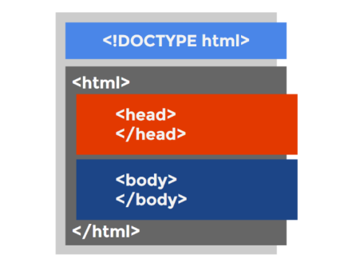
Como indicamos en el tema anterior, definiremos el contenido a través de marcas que indicarán formato, partes del documento, referencias, etc.
Todo documento tiene que ir acotado entre las etiquetas <html> y </html>; esta será la primera etiqueta que encontraremos tras indicar la versión de HTML y representará la raíz de nuestra estructura.
Después, nos encontraremos con la etiqueta <head>, que contendrá información del documento, como el título o ciertas palabras clave que permitirán que los motores de búsqueda encuentren la página. Dentro de la cabecera tendremos la etiqueta <title>, donde indicamos el título de la página. Es importante que elijamos uno adecuado, relacionado con el contenido de la web. Por último, tendríamos la etiqueta <body>, donde iremos incluyendo otras etiquetas para crear el contenido.
Por lo tanto, la estructura básica de una página web sería:
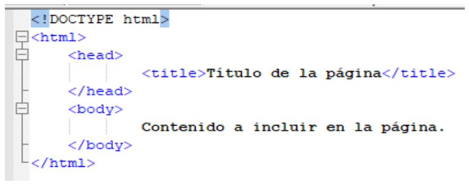
Tipo de documento (DTD)
Como ya hemos visto, un documento HTML está estructurado en tres partes claramente diferenciadas, cada una de las cuales contendrá diferentes etiquetas. Estas etiquetas las vamos a definir en los siguientes puntos.
La etiqueta <!DOCTYPE ...> nos indica el tipo de documento con el que trabajaremos. Según el tipo de documento que sea, se aplicarán una serie de reglas mediante las que podremos saber si el documento creado es válido o no.
Los tipos de documentos posibles para la versión de HTML 4.01 son los siguientes:
Estricto
Permite usar etiquetas HTML 4.01, pero no va a admitir etiquetas obsoletas.
<!DOCTYPE HTML PUBLIC "-//W3C//DTD HTML 4.01//EN"
"http://www.w3.org/TR/html4/strict.dtd">Transicional
En este se pueden usar etiquetas de cualquier versión de HTML.
<!DOCTYPE HTML PUBLIC "-//W3C//DTD HTML 4.01 Transitional//EN"
"http://www.w3.org/TR/html4/loose.dtd">Frameset
Tendría soporte para frames (marcos que se crean en las páginas web). Actualmente lo podemos considerar desfasado, pues los frames se usan cada vez menos.
<!DOCTYPE HTML PUBLIC "-//W3C//DTD HTML 4.01 Frameset//EN"
"http://www.w3.org/TR/html4/frameset.dtd">En caso de que trabajemos con la versión de HTML5, la manera de indicarlo se simplifica, porque simplemente tendríamos que poner la etiqueta <!DOCTYPE html>.
Si no se indica el tipo de documento, el navegador pasa a un modo no estándar y se activa el modo de compatibilidad con páginas antiguas. Esto puede ser peligroso porque algunas etiquetas se pueden interpretar de forma diferente. Si queremos que nuestro código use etiquetas HTML 4.01 y que no admita obsoletas, necesitaríamos el siguiente código:
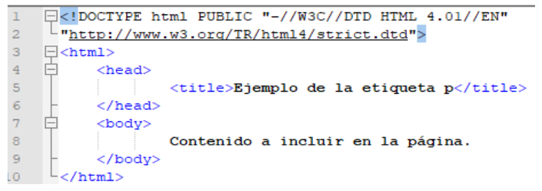
Cabecera
Dentro de las etiquetas <head> y </head> vamos a incluir elementos de la cabecera. Algunas de esas etiquetas son:
<title>: se indica el título de la página y aparecerá en las pestañas de los navegadores.<meta>: define metadatos que no se pueden crear con otras etiquetas de HTML. Algunos ejemplos son:<meta charset="UTF-8">: indica el conjunto de caracteres usado. En este caso se usa UTF-8.<meta name="description" content="Contenido">: permite indicar qué tipo de información va a contener la página web.<meta name="keywords" content="palabras clave">: permite indicar palabras clave para los motores de búsqueda.<meta name="author" content="nombre del autor">: indica el autor de la web.
<link>: se utiliza para enlazar CSS externo.<style>: aquí escribiríamos el CSS y no en un fichero externo.<script>: se indica un script en línea o la referencia a un fichero externo con el script, normalmente JavaScript.
Ejemplo de cabecera:
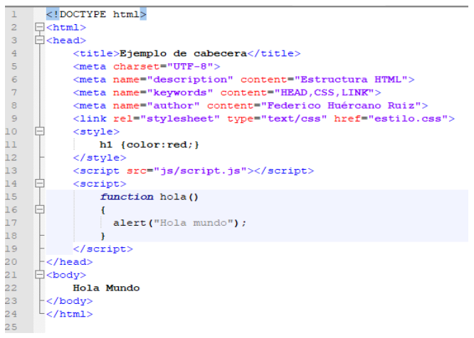
Para el caso del script y del CSS, siempre es una buena práctica indicarlos en ficheros externos, por lo que es más aconsejable utilizar <link rel> para indicar el CSS externo y <script src> para el fichero que contiene el script utilizado.
Tanto CSS como JavaScript los veremos en temas posteriores, en los cuales detallaremos su uso y sintaxis.
4.1. Charset (juego de caracteres)
Para que un documento HTML se muestre de manera correcta en el navegador, debemos indicarle el conjunto de caracteres a utilizar para que no haya errores de interpretación. Como hemos visto, esto se indica con la etiqueta <meta charset="UTF-8">.
¿En qué consiste la codificación de caracteres?
Un ordenador solo entiende el 0 (sin paso de corriente) y el 1 (con paso de corriente). Para representar los caracteres con los que vamos a trabajar en el documento HTML, debemos relacionar esos ceros y unos con el juego de caracteres que se necesite.
ASCII (American Standard Code for Information Interchange) fue el primer estándar para codificar los caracteres. Definió 128 caracteres alfanuméricos, aunque actualmente admite más. Algunos de esos caracteres son:
| DEC | OCT | HEX | BIN | Símbolo | HTML Number |
|---|---|---|---|---|---|
| 32 | 040 | 20 | 00100000 | espacio |   |
| 33 | 041 | 21 | 00100001 | ! | ! |
| 34 | 042 | 22 | 00100010 | " | " |
| 35 | 043 | 23 | 00100011 | # | # |
| 36 | 044 | 24 | 00100100 | $ | $ |
| 37 | 045 | 25 | 00100101 | % | % |
| 38 | 046 | 26 | 00100110 | & | & |
| 39 | 047 | 27 | 00100111 | ' | ' |
| 40 | 050 | 28 | 00101000 | ( | ( |
| 41 | 051 | 29 | 00101001 | ) | ) |
Por ejemplo, al carácter $ le corresponde la codificación binaria 00100100, que también se puede indicar en notación decimal (36), octal (044) o hexadecimal (24). Otros juegos de caracteres son:
- ISO-8859-1: era el juego de caracteres usado para HTML4. Admite 256 caracteres diferentes.
- ANSI: fue el juego original de Windows. Es igual que ISO-8859-1, pero tiene 32 caracteres más.
- UTF-8: salva las limitaciones de los dos juegos anteriores, pues cubre casi todos los caracteres y símbolos del mundo. Para HTML5 este es el conjunto de caracteres predeterminado.
Cuando tenemos que incluir en una página HTML algunos símbolos que no tengamos en el teclado, podemos usar el número HTML correspondiente a ese carácter. Por ejemplo, en la tabla vemos que el símbolo ! tiene el HTML number !. Si queremos que ese símbolo aparezca en el documento, tendríamos que poner el siguiente código HTML:
<p>Voy a mostrar el signo de admiración !</p>Cuerpo: bloques de contenido. Párrafo
Dentro de las etiquetas <body> y </body> vamos a incluir elementos del cuerpo. En esta sección tendremos el mayor número de etiquetas, ya que aquí se define el contenido total de nuestra página web.
Podemos clasificar los tipos de etiquetas en los siguientes grupos:
- Bloques de contenido
- Secciones
- Texto
- Enlaces
- Listas
- Contenido incrustado
- Tablas
- Formularios
- Elementos interactivos
Vamos a comenzar estudiando las etiquetas pertenecientes a los bloques de contenido. Estas etiquetas nos van a permitir crear bloques de elementos que podremos distribuir a lo largo de la página web.
Párrafo
- Etiqueta:
<p> - Función: esta etiqueta nos va a permitir crear párrafos de texto o imágenes.
<p>Este es un párrafo de ejemplo.</p>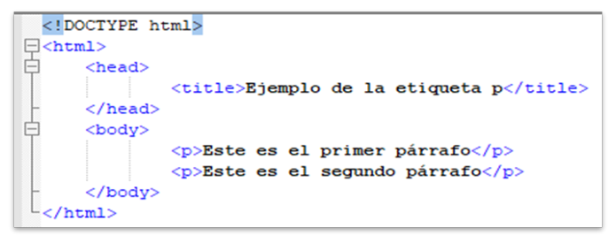
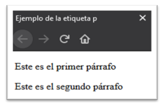
Cuerpo: bloques de contenido. Separador y división
Separador
- Etiqueta:
<hr> - Función: nos permite separar elementos con una línea horizontal. No es necesaria una etiqueta de cierre.
<p>Primer bloque</p>
<hr>
<p>Segundo bloque</p>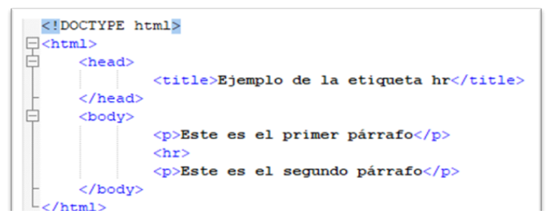
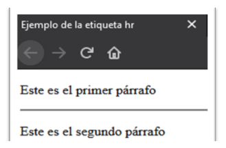
División
- Etiqueta:
<div> - Función: esta etiqueta nos va a permitir agrupar otros elementos HTML (párrafos, tablas, otras divisiones, etc.) para crear una agrupación mayor. A las divisiones también se les suele llamar capas.
<div>
<p>Contenido agrupado en una división.</p>
</div>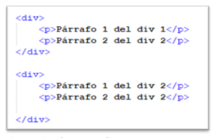
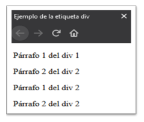
Cuerpo: bloques de contenido. Divisiones anidadas
Las divisiones se pueden anidar, lo cual nos permitirá estructurar el contenido de nuestra página web en bloques mayores. Veamos un ejemplo:
<div>
<h2>Primer bloque</h2>
<div>
<p>Contenido de una división anidada.</p>
</div>
</div>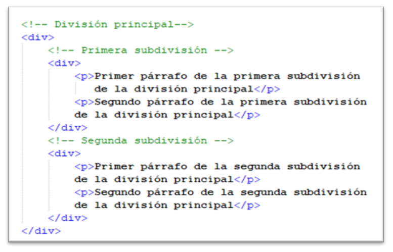
Es muy útil usar divisiones, pero no hay que abusar de ello. Es una buena práctica usarlas solo cuando hay que agrupar más de un elemento. En cambio, una división será innecesaria si solo va a contener un párrafo. Veamos la vista producida en el navegador:
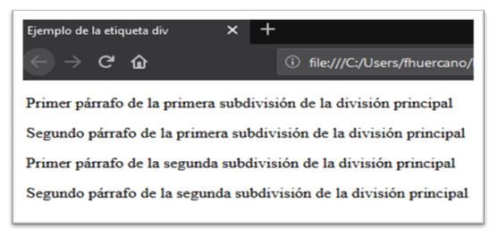
El resultado que obtenemos en el navegador es el mismo que si no hubiéramos usado divisiones, es decir, solo con etiquetas <p>. Sin embargo, ya veremos en próximos apartados que, al haber hecho divisiones, podemos aplicar diferentes colores con CSS a los div.
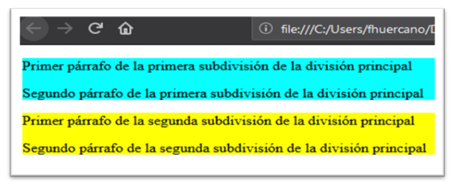
Cuerpo: bloques de contenido. Cita larga
Cita larga
- Etiqueta:
<blockquote> - Función: permite incluir un texto «largo» que, a su vez, puede contener varios párrafos o incluso otras etiquetas. Como regla general, los navegadores suelen mostrar este bloque con un margen a izquierda y derecha.
<blockquote>
<p>Este es un texto citado que puede extenderse
durante varios párrafos.</p>
</blockquote>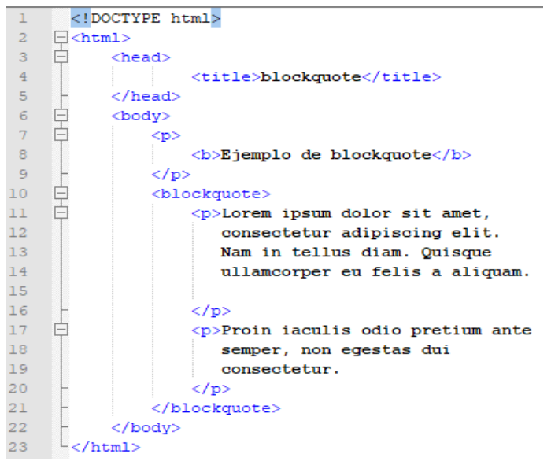
En el navegador obtendríamos la siguiente vista:
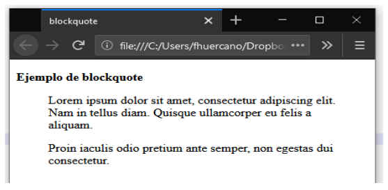
Como se puede observar, sin haber indicado ningún estilo aparecen márgenes tanto en la parte derecha como en la izquierda. En este caso se han incluido párrafos, pero podría haber contenido imágenes, divisiones, separadores, etc.
Cuerpo: bloques de contenido. Formateo
Formateo
- Etiqueta:
<pre> - Función: esta etiqueta se utiliza cuando se quiere mantener los espacios, tabuladores y diseño del texto original.
<pre>
Este texto mantiene
los espacios y los saltos de línea.
</pre>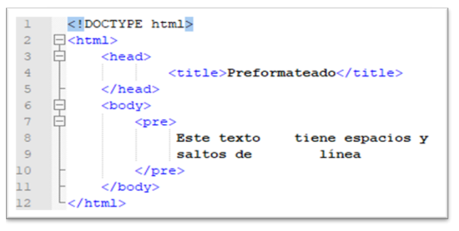
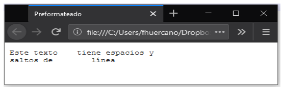
Secciones
Las secciones nos permiten fraccionar el contenido en partes que comparten un tema común. En HTML4 y XHTML 1 la única etiqueta para hacer agrupaciones y darles un significado común es <div>. En HTML5 se han incluido nuevas etiquetas que resuelven este problema.
En el tema que dediquemos específicamente a las mejoras de HTML5 se incluirán estas etiquetas. Ahora solo se van a referenciar los títulos como elemento de sección.
Títulos
- Etiquetas:
<h1>,<h2>,<h3>,<h4>,<h5>y<h6>. - Función: se utilizan para identificar títulos y subtítulos en nuestro contenido.
<h1>Título principal</h1>
<h2>Apartado</h2>
<h3>Subapartado</h3>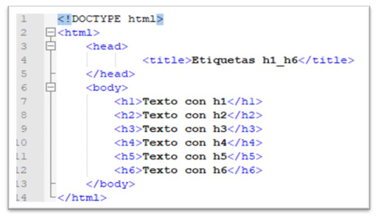
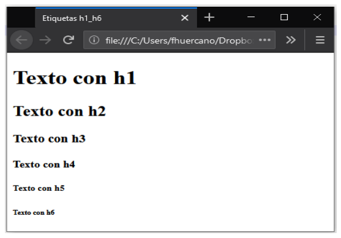
Si al documento HTML no se le indica alguna hoja de estilo, el navegador trabaja con la hoja de estilo por defecto. En esta, las etiquetas de título se muestran en tamaño inverso al número indicado en su etiqueta: a menor número, mayor tamaño. Por lo tanto, <h1> será la etiqueta que mostrará el título más grande y <h6>, el más pequeño.
Las etiquetas <h1> deben usarse de manera jerárquica; es decir, no podemos saltarnos niveles. De esta manera, no debemos anteponer un <h2> a un <h1>, por ejemplo. El uso más frecuente de un nivel u otro es el siguiente:
<h1>suele usarse para un apartado principal.<h2>, para un apartado dentro del apartado principal.<h3>, para un subapartado incluido en el anterior, y así sucesivamente.
Caso práctico 1: «Información de la empresa»
Planteamiento: Alberto le comenta a Gloria que necesita un contenido en HTML donde se muestre información acerca de ella.
Nudo: Para tener información de todos los empleados de la empresa en la intranet, Alberto necesita ciertos datos en formato HTML. Por este motivo, le pide a Gloria que lo haga con sus datos y le pase la plantilla. Los datos que debe incluir son:
- Nombre y apellidos.
- Estudios.
- E-mail.
Para ello, utiliza las etiquetas vistas en el tema.
Desenlace: Se puede plantear una estructura HTML como la que veremos en el siguiente ejemplo. En la figura 21 puedes observar el desarrollo del código que se podría generar y en la 22, la vista que produciría en el navegador.
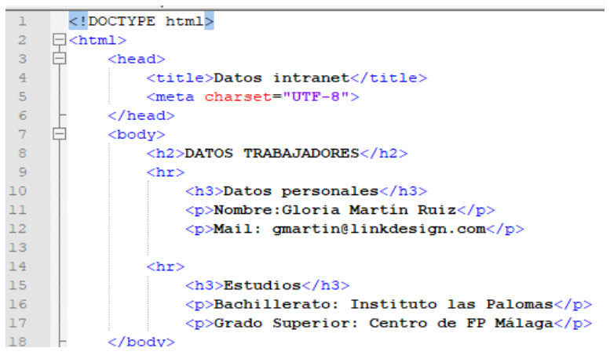
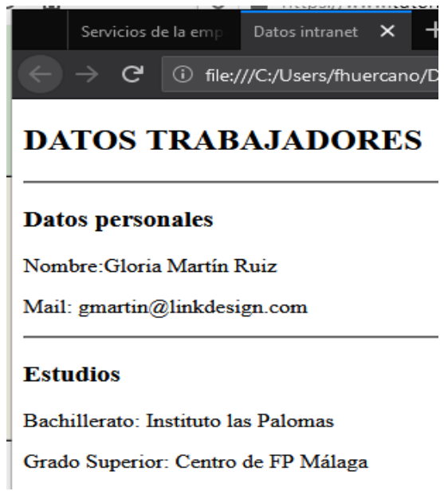
Caso práctico 2: «Mejora de plantilla de trabajadores»
Planteamiento: Alberto ve la plantilla que ha hecho Gloria y le comenta algunas cuestiones para que las revise y la vuelva a hacer.
Nudo: Gloria, debes incluir comentarios en el código y también quiero algo de formato mediante la etiqueta <pre> para que los datos personales y los estudios tengan un cierto sangrado.
Utiliza también div, porque más adelante vamos a cambiar el color de cada apartado. Por último, incluye el teléfono en los datos personales.
Desenlace:
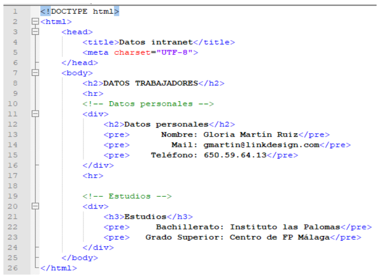
Podemos observar una posible solución a los cambios que pide Alberto en la figura 23, y cómo se comporta el navegador ante ellos en la figura 24.
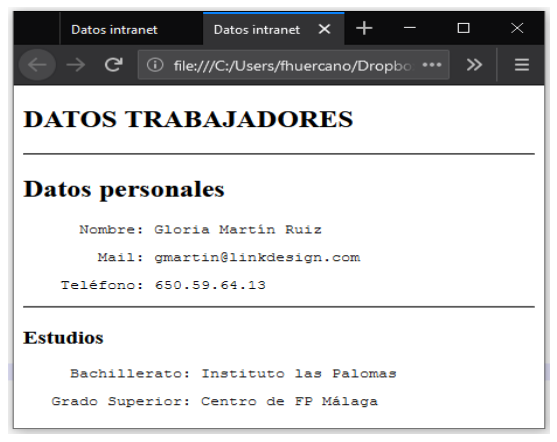
Resumen y resolución del caso práctico de la unidad
Como hemos estudiado en el tema, un documento HTML se estructura en tres partes claramente diferenciadas: el tipo de documento, la cabecera y el cuerpo. El tipo de documento nos indicará la versión de HTML con la que trabajamos; en la cabecera damos información relativa al contenido y en el cuerpo incluimos las etiquetas necesarias para dotar de contenido a la página web.
También hemos visto la importancia de elegir un correcto juego de caracteres para que no haya problemas en la visualización de ciertos símbolos poco frecuentes.
Finalmente, se ha comprobado que la inclusión de etiquetas en el cuerpo nos permitirá añadir riqueza y funcionalidad a la página web.
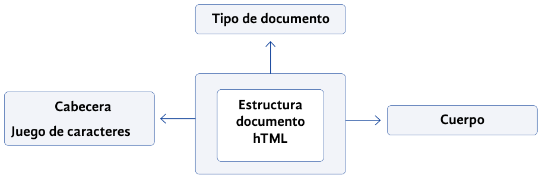
Resolución del caso práctico de la unidad
Te proponemos a continuación la resolución del caso práctico planteado al inicio del tema, en donde se planteaba crear una página web que mostrara información sobre una agencia de viajes. Aquí puedes ver la vista que tendríamos en el navegador, y en el anexo adjunto, el código para generarlo.
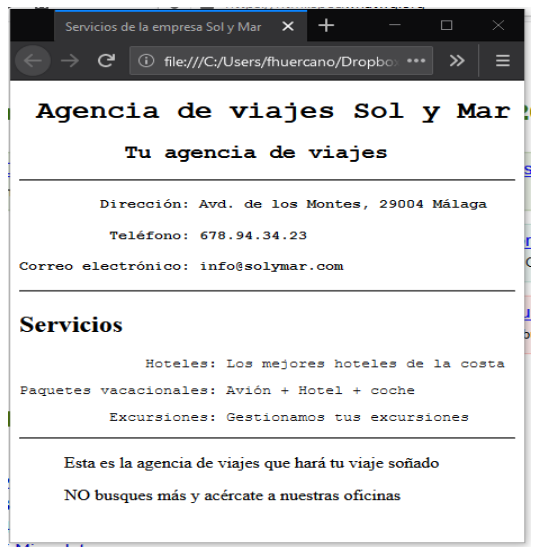